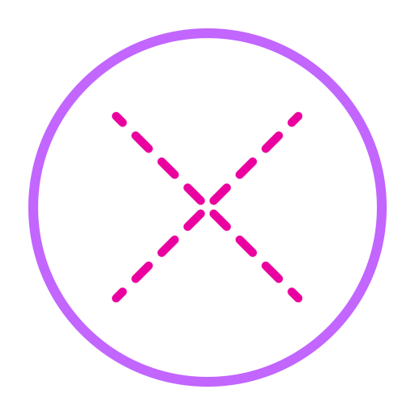

Error Intializing WebXR
Are you using a mobile device with Chrome browser v81+?
Preparing
Unicorns
Error Intializing WebXR
Are you using a mobile device with Chrome browser v81+?
Preparing
Unicorns
When all is loaded and the AR module of WebXR is available, you can enter the AR experience by pressing the glowing logo. The first time you do this, the browser will ask for permission to start an AR session. Once you're in AR mode, move your device around until a target is shown. When you then touch the screen, a unicorn will be placed at that location.
The following UI elements are available:
Scan Area:
This icon indicates that the user should move their device around to help build the underlying environment map.
For AR to work, the browser's underlying AR framework needs to understand the real world near the user. It does this by progressively creating a 3D map while moving the device through the environment. To expedite this, the icon is shown to encourage the user to move their device around. A well lit environment also helps this process.
Note that if you point or move your device to a new part of the environment, then the icon might be shown again while the environment map is being expanded.

Exit AR: Press this to exit..
Restart Placement: Reactivates the target, so the model can be repositioned.
Enabled when the model has been placed.
Toggle scale: Toggles the model between normal and full size.
Enabled when the model has been placed.
Anim 1: Take out or put away umbrella.
Enabled when the model has been placed.
Anim 2: Start or stop whistling.
Enabled when the model has been placed.
The WebXR standard is fairly new, your browser might not yet support it; Chrome v81 and up should support it out of the box.